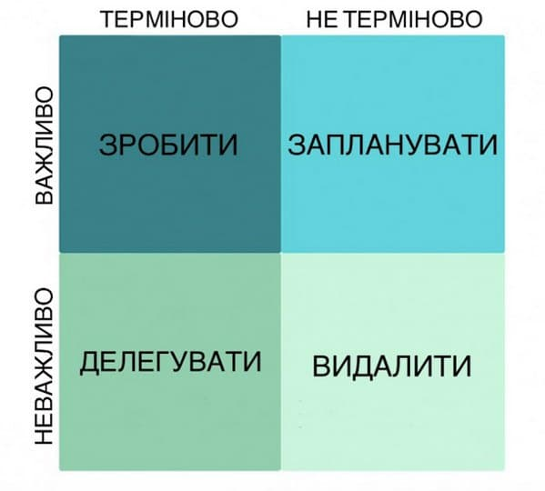
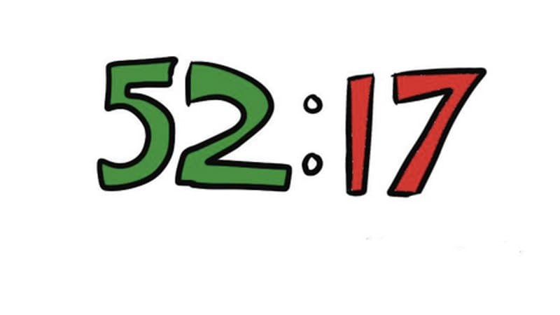
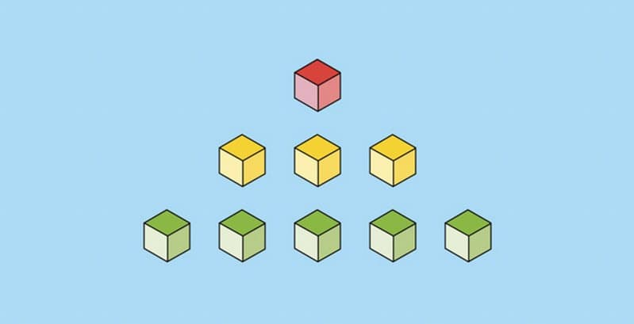
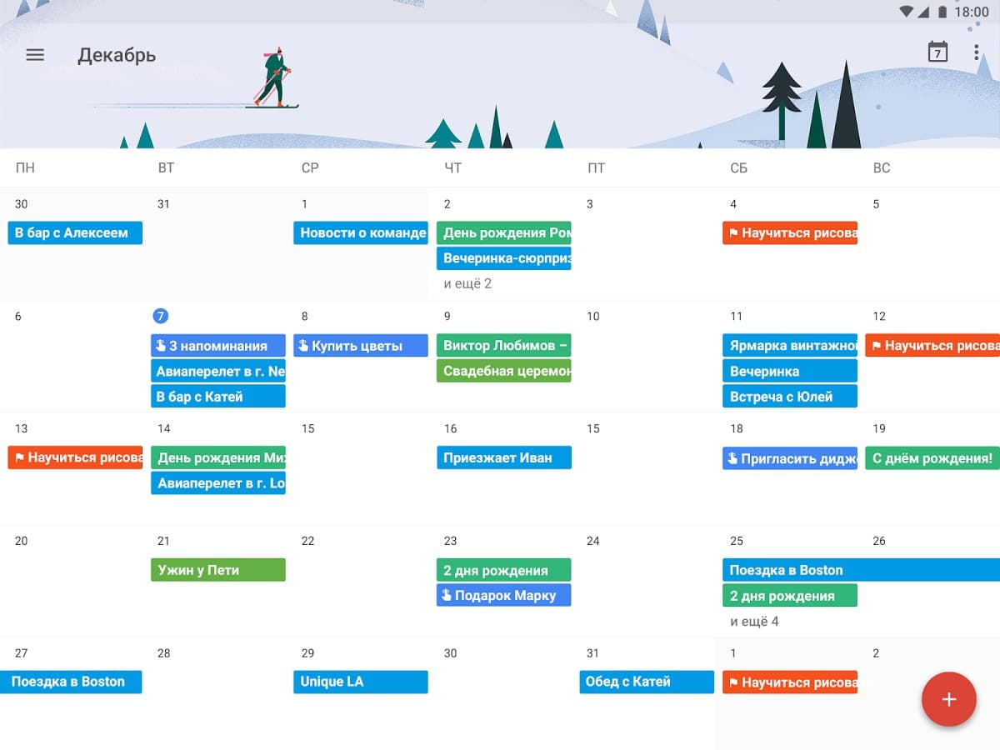

ЩО ТАКЕ ТАЙМ-МЕНЕДЖМЕНТ
Термін "тайм-менеджмент" запозичено з англійської мови ("
time management") й означає "
управління часом". Планування, націлене на досягнення
цілей з мінімальною витратою часу та максимальною ефективністю.
Тайм-менеджмент – це комплекс методів і технік для управління часом.
Уміння планувати і структурувати свій день, тиждень, місяць і навіть
рік дуже спростить ваше життя й обов'язково призведе до успіху.
Річард Вільямс, батько-тренер всесвітньо відомих тенісисток Серени та
Вінус Вільямс, говорив, що, "не плануючи нічого, ти плануєш невдачу".
Тайм-менеджмент - це набір стратегій, методів і інструментів, спрямованих на ефективне управління часом і завданнями з метою досягнення більшої продуктивності і досягнення поставлених цілей. Основна ідея тайм-менеджменту полягає в тому, щоб витрачати час ефективно, приділяючи його найважливішим завданням і уникати втрати часу на неважливі або відволікаючі справи.
Основні принципи тайм-менеджменту включають:
- Планування: Створення чіткого плану задач і цілей, які потрібно досягнути в певний період часу.
- Приоритети: Визначення найважливіших завдань і їх обрання для виконання перед усіма іншими.
- Дедлайни: Встановлення термінів для завершення завдань і дотримання їх.
- Діліться часом: Розподіл часу на блоки для різних видів робіт (наприклад, робота, відпочинок, особисті справи).
- Управління відволіканнями: Уникання відволікань і зосередження на завданнях.
- Ефективні інструменти: Використання технологічних інструментів, програм і методів для оптимізації роботи і спрощення планування.
- Оцінка результатів: Регулярна оцінка своєї продуктивності і внесення коректив у план, якщо це необхідно.
- Відпочинок і релакс: Забезпечення часу для відпочинку, релаксу і відновлення енергії для збереження продуктивності на тривалий термін.
Тайм-менеджмент може бути корисним як в особистому житті, так і в професійній діяльності, допомагаючи людям краще управляти своїм часом і досягати більшої ефективності та задоволення від своєї роботи.
НАВІЩО ПОТРІБНИЙ ТАЙМ-МЕНЕДЖМЕНТ
Кожен з нас стикався з тим, що не вистачає часу. Ця проблема поширена в усіх аспектах життя: роботі, стосунках, повсякденній рутині тощо. Нестача часового ресурсу провокує стрес, а саме він є однією з головних причин головного болю, безсоння, прокрастинації та депресії. Щоб упоратися із цим, потрібно навчитися розставляти пріоритети, фокусуватися на важливому та структурувати.
Тайм-менеджмент - це навичка, що дозволяє нам краще управляти нашим
часом і ресурсами. Ця навичка важлива як в особистому, так і в
професійному житті. Вона полягає в плануванні та організації часу
таким чином, щоб досягти більшої продуктивності та ефективності.
Завдяки тайм-менеджменту ми можемо легше розподілити час між різними
завданнями і проектами. Він навчає нас визначати пріоритети,
концентруватися на найважливіших завданнях і уникати відволікань.
Тайм-менеджмент також допомагає знижувати стрес, оскільки дозволяє
уникати відчуття поспішання і горячих дедлайнів.
За допомогою цієї навички ми можемо досягати своїх цілей, більш
ефективно використовувати свій час і, в кінцевому підсумку,
поліпшувати якість свого життя, роблячи його більш збалансованим і
задовольняючим.
ЯК НАВЧИТИСЯ КЕРУВАТИ ЧАСОМ
Існує безліч технік і методів. Слід вибрати щось максимально комфортне та ефективне саме для вас. Якщо ж ви не знаєте, що краще підійде, оберіть кілька методів, принципів, технік і спробуйте щотижня щось нове. Після кожного тижня підсумуйте результати, зіставте за ефективністю й оберіть найзручніший для вас варіант.
Навчитися керувати часом - це важлива навичка, яка може поліпшити як продуктивність, так і якість життя. Навички тайм-менеджменту можна навчити, і вони стануть вам в нагоді, незалежно від того, чи ви працюєте, чи ведете особисте життя. Важливо впроваджувати їх систематично і дотримуватися зазначених стратегій для досягнення більшої продуктивності і кращого управління часом.
Зараз ми розглянемо кілька технік, методів і принципів тайм-менеджменту.
МЕТОД «90 НА 30»
Принцип методу «90 нам 30» полягає в тому, що вам потрібно виділити півтори години на роботу та пів години на відпочинок. Під час відпочинку ви дасте мозку охолонути і налаштуватися на наступні півтори години продуктивності. Учені вже довели, що наш мозок не може бути зосередженим понад 90 хвилин. Він починає відволікатися на дрібниці, тож ефективність вашої роботи знизиться. Саме тому між підходами слід трохи відпочити задля досягнення високих результатів. Також вам потрібно розставити пріоритети за принципом матриці Ейзенхауера.
МАТРИЦЯ ЕЙЗЕНХАУЕРА
Цей метод полягає у правильному розставленні пріоритетів. Ми часто стикаємося з тим, що не можемо вирішити, з чого почати, яке завдання робити передусім. У такому разі необхідно скористатися матрицею Ейзенхауера.
Матриця має чотири квадрати:
- Важливо-терміново – зробити
- Важливо-не терміново – запланувати
- Неважливо-терміново – делегувати
- Неважливо-не терміново - видалити
До першого квадрату належать завдання з терміном здавання. Наприклад, домашнє завдання в навчальному закладі, оплата комунальних послуг, виконання запиту клієнта. Такого типу завдання є важливими й одночасно терміновими, тому що мають дедлайн, тож їх потрібно робити в першу чергу.
До другого квадрата можна зарахувати справи, які не мають терміну здачі, але вони, безумовно, впливають на ваш успіх. Це, можливо, вивчення нової іноземної мови, читання книжки, заняття спортом. Вони важливі, але оскільки не мають дедлайну, не обов'язково виконувати їх просто зараз.
До третього квадрата належать справи, які не мають особливої важливості, але виконати їх потрібно. Це може бути побутова рутина. Наприклад, перестелити постільну білизну, випрати її. Такі завдання потрібно зробити, але пізніше, щоб виділити час на справи з попередніх двох квадратів.
І нарешті четвертий квадрат. До нього потрапляють усі дії, які не мають жодної важливості та терміновості виконання: погортати стрічку в інстаграмі чи фейсбуці, подивитися серіал чи фільм. Перелічені справи краще видалити зі списку взагалі, принаймні зарахувати до списку.
МЕТОД «52 НА 17»
Метод "52 на 17" абсолютно аналогічний методу "90 на 30". Вам потрібно виділити 52 хвилини на продуктивну роботу та 17 хвилин на відпочинок. Перед початком слід також розставити пріоритети, щоб витратити більше сил на важливе і термінове, коли голова свіжа й не забита попередніми справами. Цей спосіб підійде тим, кому важко бути зосередженим тривалий час. Дуже важливо під час відпочинку не сидіти в соціальних мережах, бо вони також несуть інформаційне навантаження та змушують мозок працювати. Поставте таймер на 17 хвилин і нічого не робіть.
МЕТОД «ХОЧА Б N ХВИЛИН»
Цей метод ідеально підходить любителям відкладати на потім. Суть методу в тому, що перед початком завдання, яке зовсім не хочете робити, слід виділити будь-яку кількість хвилин на виконання. Наприклад, 10 хвилин виділяєте на завдання, у процесі мозок губиться в часі і ви витрачаєте більше, ніж 10 хвилин. Метод чудово підійде для більш дрібних завдань, які не потребують восьмигодинного робочого дня.
ПОЇДАННЯ «ЖАБИ»
Назва не надто презентабельна, але концепція методу досить ефективна. У більшості випадків ми ділимо завдання на ті, що нам не надто складно робити, і ті, що дуже ліньки. «Жаба» - саме другий тип завдань. Вам слід виконати спочатку завдання, яке найбільше не хочеться, а потім інші. Таким чином ви скеруєте всі свої сили на те, що важко, і решта завдання видадуться вам легкими.
ТАЙМ-МЕНЕДЖМЕНТ ЗА ХРОНОТИПОМ
Учені стверджують, що існують 4 хронотипи: леви, вовки, ведмеді та дельфіни.
Леви: люди, які можуть прокидатися без будильника з 7:30 до 10:00. Їхня працездатність найбільш ефективна в проміжку 10:00-17:00, а лягти спати їм найкраще до 22:30.
Вовки: це той тип людей, яким важко підвестися, але вони прокидаються з 7:30 до 12:00. Найбільш продуктивні до 20:00 і легко засинають опівночі.
Ведмеді: їм без проблем дається підйом з 7:00 до 11:00. Пік їхньої активності – 11:00-18:00. Приготуватися до сну та заснути їм краще до 22:30.
Дельфіни: ці люди можуть прокидатися з 7:00 до 10:00 і без проблем заснути ще раз. Їхня продуктивність найвища з 10:00 до 18:00. Щоб заснути, їм потрібно відкласти всі гаджети за дві години до сну.
Якщо визначите, який хронотип Ви, то без проблем зможете скласти власний графік роботи.
ПРАВИЛО «1-3-5»
Насамперед ви повинні виділити 9 завдань на день: одне високого рівня складності, три середнього та п'ять низького. У пріоритет, звісно, поставте спочатку важчі справи. Згодом ви зможете скоригувати правило під себе. Наприклад, не 1-3-5, а 1-2-6.
ГРАМОТНЕ ПЛАНУВАННЯ НА ЗАВТРА
Такий спосіб чудово підійде тим, кому важко дається ранній підйом. Вам слід скласти план на завтра, щоб оцінити навантаження дня. Уранці поспіхом наш мозок може проґавити якесь завдання або навіть кілька, бо ще повністю не запустився режим роботи. Планувати з вечора можна як особисті справи, так і робочі.
ДЕДЛАЙНИ
Дедлайн – термін виконання завдання. Ставте собі дедлайни, тому що саме вони стимулюють працювати швидше. Дослідники стверджують, що навіть встановлені терміни здачі сприяють виконанню справ. На жаль, вони працюють гірше, ніж дедлайни, встановлені кимось: начальником, куратором, родичем. Щоб імплементувати самовстановлені дедлайни, вам потрібна добра самоорганізація.
ЩО РОБИТИ, ЯКЩО НЕМАЄ ЖОДНОЇ ВІЛЬНОЇ ХВИЛИНИ
Можливо, ви користуєтеся методами тайм-менеджменту, але все одно не вистачає часу на виконання тієї чи іншої справи. Тоді вам слід записувати кожен свій крок з моменту дзвінка будильника до того, як заснете.
Приклад
- 7:00 – прокинувся
- 7:05-7:10 – вмивався
- 7:15-7:30 – снідав
- 7:35-8:00 – добирався на роботу
- 8:00-8:15 – розмовляв з босом…
Аудит щоденного часу проводьте протягом тижня, потім проаналізуйте, де є принаймні 5 вільних хвилин, потім об'єднайте всі п'ятихвилинні проміжки і побачите, що у вас є година вільного часу.
ДЕ СТВОРЮВАТИ СПИСОК ЗАДАЧ НА ДЕНЬ
Існує безліч додатків для ефективного та грамотного планування, але здебільшого вони платні. На щастя, Google надає нам свій безкоштовний планер Google-календар . Тут ви можете створювати плани на щодень і встановлювати нагадування для кожного пункту зі списку. Цей застосунок можуть установити як власники Android , так і власники iOS . Також Google-календар доступний для Windows.
ВИСНОВОК
Закінчуючи статтю про тайм-менеджмент та методи управління часовим ресурсом, хотілося б підкреслити, що ефективне володіння часом є ключовим аспектом успішної та збалансованої життєвої подорожі. Ця навичка може значно полегшити наше щоденне існування, дозволяючи нам вдосконалювати свою продуктивність, досягати мети та зберігати здоров'я та емоційний комфорт.
Тайм-менеджмент - це не лише сухі методи та стратегії, але й внутрішній розвиток, який дозволяє нам краще розуміти себе, свої цілі та цінності. Він надає можливість гнучко адаптуватися до змін і впевнено рухатися вперед.
Тим не менш, важливо пам'ятати, що немає універсального підходу до тайм-менеджменту, і кожна людина повинна знайти свої власні способи, які найкраще відповідають її потребам та стилю життя. Головне - це починати і намагатися вдосконалюватися, крок за кроком, для досягнення гармонії між роботою, особистим життям і власними мріями. Тайм-менеджмент - це інструмент, який допомагає нам відкривати більше можливостей і жити більш повноцінним життям.
Успіхів!